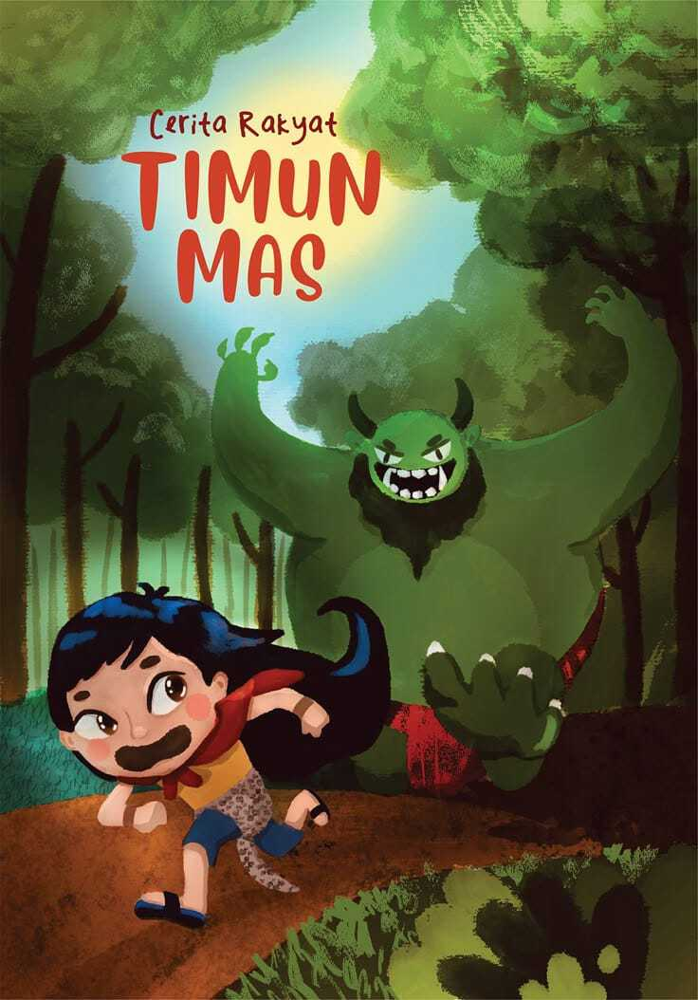
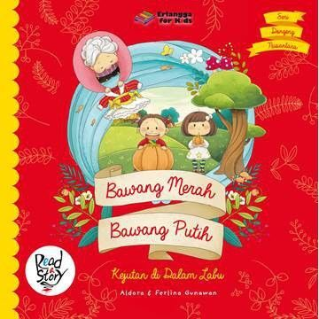
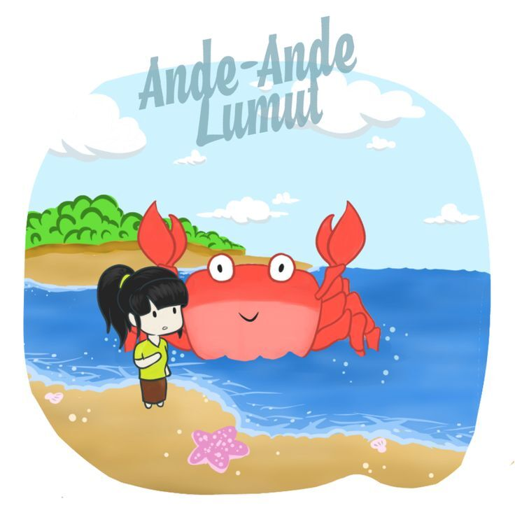

Di sebuah hutan lebat di tepi sungai besar, hiduplah seekor kancil yang terkenal dengan kecerdasannya dan kelihaiannya.
Suatu hari, kancil ingin menyeberangi sungai untuk mencari makanan di seberang. Namun, sungai itu sangat lebar dan dalam, tidak mungkin ia menyeberangi dengan cara biasa. Saat mendekati tepi sungai,
ia melihat pemandangan yang membuatnya berpikir keras: puluhan buaya besar sedang berjemur di tepi sungai, menghalangi jalannya.Kancil yang terkenal dengan kecerdasannya, tidak langsung putus asa.
Ia berpikir cepat. Ia tahu bahwa buaya-buaya itu sangat rakus dan mudah tertipu. Dengan langkah tenang, kancil mendekati buaya-buaya itu. "Hai, saudara-saudaraku, buaya-buaya yang gagah perkasa!
" sapa kancil dengan suara ramah. Buaya-buaya itu melirik kancil dengan mata penuh curiga."Ada apa gerangan, Kancil kecil?" tanya seekor buaya besar yang tampak sebagai pemimpin mereka.
"Begini, saudara-saudaraku," kata kancil, "Raja hutan akan memberikan hadiah besar kepada siapapun yang bisa menghitung jumlah buaya di sungai ini dengan tepat. Aku ingin sekali mendapatkan hadiah itu,
tetapi aku sendiri tidak mampu menghitungnya. Kalian kan banyak, pasti bisa!"Buaya-buaya itu tergiur dengan janji hadiah dari Raja Hutan. Mereka saling berbisik dan akhirnya setuju untuk membantu kancil.
Dengan penuh semangat, buaya-buaya itu pun berbaris rapi di tepi sungai, satu persatu menyebutkan namanya.Kancil yang cerdik, memanfaatkan kesempatan itu. Saat buaya-buaya sibuk menghitung diri mereka sendiri,
kancil dengan cepat memanjat punggung buaya pertama. Dari punggung buaya pertama, ia melompat ke punggung buaya kedua, kemudian ke ketiga, dan seterusnya. Ia melompat dengan lincah dan hati-hati,
menghindari gigitan buaya-buaya yang sedang asyik menghitung.Satu per satu buaya dilewatinya, hingga akhirnya kancil sampai di tepi sungai seberang. Ia berlari menjauh ke dalam hutan,
meninggalkan buaya-buaya yang masih sibuk menghitung dan baru menyadari mereka telah ditipu oleh kancil yang licik namun jenaka. Kancil pun berhasil menyeberangi sungai dengan selamat dan mendapatkan makanannya.
Timun Mas

Di sebuah desa terpencil, hiduplah seorang janda miskin bernama Mbok Srini. Suatu hari, ia menemukan sebuah biji timun ajaib. Setelah ditanam, biji itu tumbuh menjadi tanaman yang menghasilkan buah timun emas yang berkilauan.
Dari timun emas itu, lahirlah seorang bayi perempuan yang cantik jelita, yang diberi nama Timun Mas.Kehidupan Mbok Srini dan Timun Mas berubah ketika suatu hari, muncullah Buto Ijo, raksasa jahat yang memiliki kekuatan sihir.
Buto Ijo telah membuat perjanjian dengan Mbok Srini sebelumnya: ia akan diberi Timun Mas saat gadis itu dewasa.Waktu berlalu, Timun Mas tumbuh menjadi gadis yang cantik dan cerdas. Mbok Srini sangat khawatir akan kedatangan
Buto Ijo yang telah lama dinanti. Sebelum Buto Ijo datang, Mbok Srini meminta pertolongan kepada seorang pertapa sakti. Pertapa itu memberinya empat bungkusan kecil berisi: biji mentimun, jarum, garam, dan terasi.
Ketika Buto Ijo datang dan mulai menyerang, Mbok Srini segera memberikan Timun Mas bungkusan-bungkusan itu seraya berpesan untuk menaburkannya jika Buto Ijo mengejarnya.Timun Mas lari sekencang-kencangnya.
Saat Buto Ijo mengejarnya, ia menaburkan biji mentimun. Seketika itu juga, tumbuhlah tanaman mentimun yang sangat lebat dan melilit kaki Buto Ijo, memperlambat langkahnya.Buto Ijo terus mengejar, dan Timun Mas menaburkan jarum.
Jarum-jarum itu berubah menjadi hutan bambu yang tajam dan lebat, semakin menghambat Buto Ijo.Buto Ijo masih berusaha mengejar, dan Timun Mas menaburkan garam. Garam itu berubah menjadi lautan luas yang menghalanginya.
Terakhir, ketika Buto Ijo hampir menangkapnya, Timun Mas menaburkan terasi. Terasi itu berubah menjadi lumpur panas yang mendidih dan menenggelamkan Buto Ijo hingga tewas.Timun Mas akhirnya selamat dan kembali ke pelukan ibunya.
Mereka hidup bahagia selamanya. Kisah Timun Mas menjadi legenda yang diwariskan turun-temurun, mengajarkan tentang pentingnya kebaikan, kecerdasan, dan keberanian dalam menghadapi kejahatan.
Bawang Merah dan Bawang Putih

Bawang Putih adalah cerita rakyat yang menceritakan tentang dua orang gadis yang memiliki nasib berbeda.Bawang Putih adalah anak yang baik hati dan rajin, sementara Bawang Merah adalah anak yang jahat dan pemalas.
Keduanya tinggal bersama ibu tiri yang jahat dan sangat memanjakan Bawang Merah.Ibu tiri mereka selalu memberikan pekerjaan rumah yang berat kepada Bawang Putih, sementara Bawang Merah dimanjakan dan dibebaskan dari pekerjaan.
Walaupun diperlakukan tidak adil, Bawang Putih tetap sabar dan rajin.Suatu hari, ibu tiri menyuruh Bawang Putih mengambil air di sumur tua yang jauh. Di sumur itu, Bawang Putih bertemu dengan seorang nenek tua yang baik hati.
Nenek itu memberikan Bawang Putih sebutir telur ayam. Telur itu akhirnya menetas menjadi ayam yang bertelur emas.Bawang Merah yang mengetahui hal ini, mencoba meniru Bawang Putih. Ia pergi ke sumur tua dan meminta telur ajaib kepada nenek tersebut.
Namun, nenek itu malah memberinya telur biasa. Ayam yang menetas dari telur itu tidak menghasilkan telur emas.Ibu tiri yang mengetahui bahwa Bawang Putih memiliki ayam yang bertelur emas, semakin membenci dan menyiksa Bawang Putih.
Ia kemudian mencuri ayam tersebut dan menjualnya.Meskipun diperlakukan buruk, Bawang Putih tetap teguh pendiriannya dan terus menunjukkan kebaikan hatinya. Akhirnya, kebaikan Bawang Putih membuahkan hasil. Ia mendapatkan kehidupan yang lebih baik dan
bahagia, sementara Bawang Merah dan ibu tirinya mendapatkan balasan atas kejahatan mereka.Kisah ini mengajarkan tentang pentingnya kebaikan, kesabaran, dan keadilan.
Malin Kundang
Malin Kundang adalah cerita rakyat Indonesia yang berasal dari Sumatra Barat. Kisah ini berpusat pada seorang anak laki-laki Bernama Malin Kundang yang durhaka kepada ibunya . Malin Kundang dan ibunya hidup miskin di sebuah desa nelayan.
Ia berlayar untuk mencari kekayaan,dan setelah bertahun-tahun, kembali sebagai seorang saudagar kaya dengan kapal mewah .Namun, Malin Kundang menolak mengakui ibunya karena malu akan penampilan ibunya yang sederhana.
Ibunya yang patah hati mendoakan agar Malin Kundang dihukum jika ia benar-benar anaknya .Sebuah badai dahsyat pun menerjang kapal Malin Kundang, menghancurkannya dan mengubah Malin Kundang menjadi batu. Batu tersebut,
yang dikenal sebagai Batu Malin Kundang, menjadi tempat wisata populer di Pantai Air Manis, Padang. Kisah ini mengajarkan pentingnya berbakti dan menghormati orang tua .
Cinderella
Cinderella adalah cerita rakyat yang dikenal di seluruh dunia dengan banyak variasi. Kisah utamanya berpusat pada seorang gadis
muda yang diperlakukan buruk oleh ibu tirinya dan saudara tirinya yang jahat. Ia dipaksa menjadi pembantu rumah tangga dan diperlakukan
dengan tidak adil.Kehidupan yang Keras: Cinderella hidup dalam kemiskinan dan diperlakukan sebagai budak oleh ibu tirinya dan saudara tirinya.
Ia melakukan semua pekerjaan rumah tangga sementara saudara tirinya menikmati kehidupan yang mewah. Meskipun demikian, Cinderella tetap baik hati
dan sabar .Undangan ke Pesta Dansa: Suatu hari, ada undangan pesta dansa kerajaan. Saudara tiri Cinderella bersiap-siap dengan antusias,
sementara Cinderella hanya bisa bersedih karena tidak diizinkan ikut. Namun, keajaiban terjadi. Dalam beberapa versi, seorang peri muncul dan
mengubah penampilan Cinderella menjadi sangat cantik, lengkap dengan kereta kencana dan pakaian mewah.Cinta Sejati: Di pesta dansa, Pangeran terpukau
oleh kecantikan dan kebaikan Cinderella. Mereka menari dan menghabiskan waktu bersama hingga tengah malam, saat mantera peri mulai hilang.
Cinderella buru-buru pergi, meninggalkan sebuah sepatu kaca sebagai petunjuk .Pencarian dan Akhir Bahagia: Pangeran mencari Cinderella ke seluruh
penjuru kerajaan, menggunakan sepatu kaca sebagai petunjuk. Akhirnya, ia menemukan Cinderella, dan mereka menikah serta hidup bahagia selamanya.
Kisah Cinderella mengajarkan tentang kebaikan, kesabaran, dan harapan, serta menunjukkan bahwa kebaikan hati dan kejujuran akan selalu menang .
Putri Tidur
Di sebuah kerajaan yang jauh, hiduplah seorang putri yang cantik jelita bernama PutriAurora.Pada hari kelahirannya, diselenggarakan pesta besar yang dihadiri oleh banyak peri.
Sebanyak 16 peri memberikan hadiah dan berkat kepada sang putri. Namun, ada satu peri jahat yang tidak diundang, merasa tersinggung, dan mengutuk Putri Aurora. Kutukan itu berbunyi:
pada hari ulang tahunnya yang ke-16, Putri Aurora akan tertusuk jarum dan tertidur selama seratus tahun.Untungnya, peri baik yang terakhir berhasil melemahkan kutukan tersebut.
Ia merubahnya sehingga Putri Aurora tidak akan mati, melainkan hanya tertidur hingga ada seorang pangeran yang menciumnya.Putri Aurora tumbuh menjadi gadis yang cantik dan anggun.
Namun, pada hari ulang tahunnya yang ke-16, kutukan itu terjadi. Saat ia sedang bersendirian di menara, ia tertusuk jarum dan langsung tertidur pulas. Seluruh istana pun ikut tertidur,
termasuk para pelayan dan pengawalnya.Sebuah semak duri yang lebat tumbuh mengelilingi istana, melindungi mereka dari dunia luar.Bertahun-tahun berlalu. Suatu hari, seorang pangeran
tampan mendengar cerita tentang istana yang tertidur di balik semak duri. Ia memberanikan diri untuk menembus semak duri dan menemukan istana yang sunyi senyap.Ia menemukan Putri
Aurora yang sedang tertidur cantik. Pangeran itu mencium Putri Aurora, dan dengan lembut, sang putri terbangun dari tidurnya. Kutukan itu pun sirna.Pangeran dan Putri Aurora jatuh
cinta dan menikah. Mereka hidup bahagia selamanya, dan seluruh istana kembali bersemangat. Kisah Putri Tidur menjadi dongeng klasik yang mengajarkan tentang kekuatan cinta sejati
dan keajaiban yang bisa terjadi.
Kelinci dan Kura-Kura
Dongeng klasik Kelinci dan Kura-kura menceritakan persaingan antara dua hewan dengan sifat yang sangat berbeda. Seekor kelinci yang cepat dan sombong,
dan seekor kura-kura yang lambat namun tekun. Kisah ini biasanya diawali dengan ejekan kelinci terhadap kura-kura karena kecepatannya yang lambat.
Kelinci seringkali meremehkan kemampuan kura-kura dan menganggap dirinya jauh lebih unggul.Konflik utama cerita ini muncul ketika kelinci menantang
kura-kura untuk berlomba. Kelinci, dengan keyakinan diri yang tinggi, langsung melesat meninggalkan kura-kura jauh di belakang.
Namun, karena rasa percaya dirinya yang berlebihan, kelinci memutuskan untuk beristirahat di tengah perjalanan, bahkan tertidur pulas.
Sementara itu, kura-kura dengan tekun dan konsisten terus berjalan, meskipun dengan kecepatan yang lambat. Saat kelinci terbangun dari tidurnya,
ia terkejut melihat kura-kura sudah hampir mencapai garis finish. Kelinci pun berlari sekencang mungkin, tetapi sudah terlambat.
Kura-kura berhasil memenangkan perlombaannya.Pesan moral dari dongeng ini sangat jelas: ketekunan dan kesabaran lebih penting daripada kecepatan semata.
Kelinci yang sombong dan cepat lengah, sementara kura-kura yang tekun dan sabar berhasil mencapai tujuannya.
Cerita ini juga sering diinterpretasikan sebagai penggambaran pentingnya kerja keras, konsistensi, dan menghindari sifat sombong dan meremehkan orang lain.
Keberhasilan tidak selalu ditentukan oleh kecepatan atau bakat alami, tetapi juga oleh usaha dan ketabahan.
Kecepatan tanpa strategi dan perencanaan yang matang dapat mengakibatkan kegagalan, sementara ketekunan dan konsistensi akan membawa pada hasil yang positif,
meskipun membutuhkan waktu yang lebih lama.
Ande-Ande Lumut

Dahulu kala, di sebuah kerajaan yang makmur di Jawa Timur, hiduplah seorang pangeran tampan bernama Raden Panji Asmoro Bangun.
Namun, ia dikenal sebagai Ande-ande Lumut karena sering menyamar sebagai pengembara sederhana, tertutup lumut di pakaiannya yang sederhana.
Ia ingin menemukan seorang putri yang memiliki hati yang baik dan budi pekerti luhur, bukan semata-mata kecantikan rupa.
Raden Panji mengumumkan pencarian istrinya ke seluruh penjuru kerajaan. Banyak putri dan wanita bangsawan datang, berharap mendapatkan hati sang pangeran.
Namun, Raden Panji memberikan ujian yang sulit. Ia meminta para wanita itu untuk merawat seekor Yuyu Kangkang, makhluk mistis yang nakal dan sulit dijinakkan.
Yuyu Kangkang akan menguji kesabaran, kebaikan hati, dan kecerdasan mereka.Banyak wanita yang gagal. Mereka kehilangan kesabaran, menyerah karena ulah
Yuyu Kangkang yang jahil, atau bahkan menyakiti makhluk itu. Namun, ada seorang putri bernama Klenting Kuning yang berhasil.
Ia merawat Yuyu Kangkang dengan penuh kasih sayang dan kesabaran.Ia memahami sifat Yuyu Kangkang dan mampu menjinakkannya dengan kelembutan dan kecerdasannya.
Raden Panji sangat terkesan dengan kesabaran dan kebaikan hati Klenting Kuning. Ia pun mengungkapkan identitas aslinya sebagai pangeran dan melamar Klenting Kuning. Klenting Kuning menerima lamaran tersebut, dan mereka pun menikah. Mereka hidup bahagia selamanya, memerintah kerajaan dengan bijaksana dan adil.
Kisah Ande-ande Lumut ini mengajarkan kita tentang pentingnya kesabaran, kebaikan hati, dan kecerdasan dalam menghadapi tantangan hidup.
Bukan kecantikan semata yang dicari, melainkan hati yang baik dan budi pekerti yang luhur.
Legenda Danau Toba
Dahulu kala, di sebuah desa di Sumatra Utara, hiduplah seorang pemuda yang rajin dan jujur bernama Samosir. Ia bekerja sebagai petani
yang tekun, selalu mengolah sawahnya dengan penuh semangat. Suatu hari, saat sedang mencari makan di hutan, Samosir menemukan seekor anjing
hitam yang terluka. Dengan iba, Samosir merawat anjing tersebut hingga sembuh.Anjing hitam itu ternyata seekor makhluk ajaib yang menyamar.
Sebagai tanda terima kasih, anjing itu memberikan Samosir sebuah benih ajaib. Samosir menanam benih itu, dan tumbuhlah sebuah pohon yang sangat
besar dan rindang. Di bawah pohon itu, Samosir menemukan seorang wanita yang sangat cantik jelita. Wanita itu bernama Boru Debata,
putri dari dewa yang turun ke bumi.Samosir dan Boru Debata jatuh cinta dan menikah. Mereka hidup bahagia dan dikaruniai seorang anak laki-laki yang tampan.
Namun, Samosir melanggar janji kepada Boru Debata.Ia tidak boleh mencuri-curi pandang saat Boru Debata sedang mandi.
Karena rasa ingin tahu yang besar, Samosir melanggar janji tersebut.Boru Debata sangat marah dan sedih.Ia kembali ke kahyangan.
Sebelum pergi, Boru Debata meminta Samosir membangun sebuah rumah untuknya. Saat Samosir membangun rumah tersebut, Boru Debata menghancurkan rumah tersebut
dengan kesedihannya yang meluap.Darah Boru Debata membanjiri tanah, membentuk sebuah danau yang luas.Rumah yang telah dibangun Samosir menjadi pulau di tengah danau tersebut.
Danau itu dikenal sebagai Danau Toba, dan pulau di tengahnya sebagai Pulau Samosir. Legenda ini mengajarkan kita tentang pentingnya menjaga janji,
mengendalikan rasa ingin tahu, dan menghargai orang yang kita cintai. Keindahan Danau Toba menjadi saksi bisu atas kisah cinta dan kesedihan yang tak
terlupakan ini.
Lutung Kasarung
Lutung Kasarung adalah dongeng Sunda yang terkenal, menceritakan kisah seekor lutung (monyet) yang membantu seorang pangeran dan
akhirnya mendapatkan balasan yang tidak adil. Kisah ini menggambarkan tema pengkhianatan, keadilan, dan karma.Kisah Awal:
Dahulu kala, hiduplah seorang pangeran yang gagah berani bernama Putra. Suatu hari, Putra tersesat di hutan dan bertemu dengan
seekor lutung yang bijaksana dan kuat. Lutung ini, yang dikenal sebagai Lutung Kasarung, membantu Putra mengatasi berbagai rintangan
dan musuh di hutan. Mereka pun menjalin persahabatan yang erat.Persahabatan dan Pengkhianatan: Dengan bantuan Lutung Kasarung,
Putra berhasil keluar dari hutan dan kembali ke kerajaannya. Namun, ketika Putra menjadi raja, ia melupakan jasa Lutung Kasarung.
Bahkan, Putra malah memperlakukan Lutung Kasarung dengan buruk, menolak bantuannya dan bahkan mengusirnya. Ini merupakan pengkhianatan
besar terhadap persahabatan mereka.Balasan dan Karma: Lutung Kasarung, meskipun sedih dan kecewa, tidak membalas dendam secara langsung.
Ia menggunakan kecerdasannya untuk membalas pengkhianatan Putra. Dengan siasat yang cerdik, Lutung Kasarung menyebabkan kekacauan di kerajaan,
membuat Putra kehilangan kekuasaannya dan menghadapi berbagai masalah.Kesimpulan: Kisah Lutung Kasarung menjadi perumpamaan tentang pentingnya kesetiaan,
rasa syukur, dan keadilan. Pengkhianatan Putra terhadap Lutung Kasarung berbuah pahit baginya, menunjukkan bahwa karma akan selalu bekerja.
Dongeng ini juga mengajarkan kita tentang pentingnya menghargai bantuan orang lain dan tidak melupakan jasa mereka.